LinearModelAnalysis¶
-
class
otlm.LinearModelAnalysis(*args)¶ Class used to analyse a linear model.
Available usages:
LinearModelAnalysis(linearModelResult)See also
Notes
This class is used in order to create a linear model from numerical samples. The linear regression model between the scalar variable
 and the
and the  -dimensional one 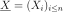 writes as follows:
-dimensional one 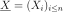 writes as follows:
where
 is the residual, supposed to follow the standard Normal
distribution.
is the residual, supposed to follow the standard Normal
distribution.Each coefficient
 is evaluated from both samples 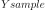 and
is evaluated from both samples 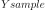 and
 and is accompagnied by a confidence interval and a p-value (which
tests if they are significantly different from 0.0).
and is accompagnied by a confidence interval and a p-value (which
tests if they are significantly different from 0.0).This class enables to test the quality of the model. It provides only numerical tests. If
 is scalar, a graphical validation test exists, that draws
the residual couples 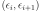, where the residual
is scalar, a graphical validation test exists, that draws
the residual couples 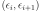, where the residual
 is evaluated on the samples 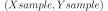:
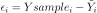 with
. The OpenTURNS method is
is evaluated on the samples 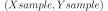:
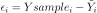 with
. The OpenTURNS method is
VisualTest_DrawLinearModelResidual.By default, labels of the 3 most significant points are displayed on graphs. This number can be changed by modifying the ResourceMap key (
LinearModelAnalysis-Identifiers).Examples
>>> import openturns as ot >>> import otlm >>> ot.RandomGenerator.SetSeed(0) >>> distribution = ot.Normal() >>> Xsample = distribution.getSample(30) >>> func = ot.SymbolicFunction(['x'], ['2 * x + 1']) >>> Ysample = func(Xsample) + ot.Normal().getSample(30) >>> algo = otlm.LinearModelAlgorithm(Ysample, Xsample) >>> result = algo.getResult() >>> analysis = otlm.LinearModelAnalysis(result)
Methods
drawCookDistance()Accessor to plot of Cook’s distances versus row labels. drawCookVsLeverages()Accessor to plot of Cook’s distances versus leverage/(1-leverage). drawQQplot()Accessor to plot a Normal quantiles-quantiles plot of standardized residuals. drawResidualsVsFitted()Accessor to plot of residuals versus fitted values. drawResidualsVsLeverages()Accessor to plot of residuals versus leverages that adds bands corresponding to Cook’s distances of 0.5 and 1. drawScaleLocation()Accessor to a Scale-Location plot of sqrt(abs(residuals)) versus fitted values. getAdjustedRSquared()Accessor to the Adjusted R-squared test. getClassName()Accessor to the object’s name. getCoefficientsEstimates()Accessor to the coefficients of the linear model of the trend. getCoefficientsNames()Accessor to the coefficients names. getCoefficientsPValues()Accessor to the coefficients of the p values. getCoefficientsStandardErrors()Accessor to the coefficients of standard error. getCoefficientsTScores()Accessor to the coefficients of linear expansion over their standard error. getCookDistances()Accessor to the cook’s distances. getDegreesOfFreedom()Accessor to the number of degrees of freedom. getFisherPValue()Accessor to the Fisher p value. getFisherScore()Accessor to the Fisher test. getFormula()Accessor to the formula. getId()Accessor to the object’s id. getLeverages()Accessor to the leverages. getLinearModelResult()Accessor to the linear model result. getName()Accessor to the object’s name. getNormalityTestResultAndersonDarling()Performs Anderson-Darling test to check Gaussian assumption of the model (null hypothesis). getNormalityTestResultChiSquared()Performs Pearson Chi-2 statistical test to check Gaussian assumption of the model getNormalityTestResultKolmogorovSmirnov()Performs Kolmogorov test to check Gaussian assumption of the model (null hypothesis). getRSquared()Accessor to the R-squared test. getResiduals()Accessor to the residuals. getShadowedId()Accessor to the object’s shadowed id. getStandardizedResiduals()Accessor to the standardized residuals. getVisibility()Accessor to the object’s visibility state. hasName()Test if the object is named. hasVisibleName()Test if the object has a distinguishable name. setName(*args)Accessor to the object’s name. setShadowedId(*args)Accessor to the object’s shadowed id. setVisibility(*args)Accessor to the object’s visibility state. -
__init__(*args)¶ x.__init__(…) initializes x; see help(type(x)) for signature
-
drawCookVsLeverages()¶ Accessor to plot of Cook’s distances versus leverage/(1-leverage).
Returns: - graph :
Graph
- graph :
-
drawQQplot()¶ Accessor to plot a Normal quantiles-quantiles plot of standardized residuals.
Returns: - graph :
Graph
- graph :
-
drawResidualsVsLeverages()¶ Accessor to plot of residuals versus leverages that adds bands corresponding to Cook’s distances of 0.5 and 1.
Returns: - graph :
Graph
- graph :
-
drawScaleLocation()¶ Accessor to a Scale-Location plot of sqrt(abs(residuals)) versus fitted values.
Returns: - graph :
Graph
- graph :
-
getAdjustedRSquared()¶ Accessor to the Adjusted R-squared test.
Returns: - adjustedRSquared :
NumericalScalar
- adjustedRSquared :
-
getClassName()¶ Accessor to the object’s name.
Returns: - class_name : str
The object class name (object.__class__.__name__).
-
getCoefficientsEstimates()¶ Accessor to the coefficients of the linear model of the trend.
Returns: - beta :
Sample
- beta :
-
getCoefficientsNames()¶ Accessor to the coefficients names.
Returns: - coefficientsNames :
Description
- coefficientsNames :
-
getCoefficientsPValues()¶ Accessor to the coefficients of the p values.
Returns: - pValues :
Sample
- pValues :
-
getCoefficientsStandardErrors()¶ Accessor to the coefficients of standard error.
Returns: - standardErrors :
Sample
- standardErrors :
-
getCoefficientsTScores()¶ Accessor to the coefficients of linear expansion over their standard error.
Returns: - tScores :
Sample
- tScores :
-
getCookDistances()¶ Accessor to the cook’s distances.
Returns: - cookDistances :
Point
- cookDistances :
-
getDegreesOfFreedom()¶ Accessor to the number of degrees of freedom.
Returns: - dof :
UnsignedInteger
- dof :
-
getFisherPValue()¶ Accessor to the Fisher p value.
Returns: - fisherPValue :
NumericalScalar
- fisherPValue :
-
getFisherScore()¶ Accessor to the Fisher test.
Returns: - fisherScore :
NumericalScalar
- fisherScore :
-
getFormula()¶ Accessor to the formula.
Returns: - condensedFormula :
String
- condensedFormula :
-
getId()¶ Accessor to the object’s id.
Returns: - id : int
Internal unique identifier.
-
getLeverages()¶ Accessor to the leverages.
Returns: - leverages :
Point
- leverages :
-
getLinearModelResult()¶ Accessor to the linear model result.
Returns: - linearModelResult :
LinearModelResult The linear model result which had been passed to the constructor.
- linearModelResult :
-
getName()¶ Accessor to the object’s name.
Returns: - name : str
The name of the object.
-
getNormalityTestResultAndersonDarling()¶ Performs Anderson-Darling test to check Gaussian assumption of the model (null hypothesis). It is accepted when p-value is low.
Returns: - testResult :
TestResult Test result class.
Notes
We check that the residual is Gaussian thanks to
NormalityTest::AndersonDarling.- testResult :
-
getNormalityTestResultChiSquared()¶ Performs Pearson Chi-2 statistical test to check Gaussian assumption of the model
Returns: - testResult :
TestResult Test result class.
Notes
The Chi-Square test is a goodness of fit test which objective is to check the normality assumption (null hypothesis) of residuals (and thus the model). It is accepted when p-value is low.
From a dataset 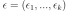 of size
 (residual set), we define 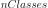 classes
where 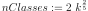.
(residual set), we define 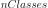 classes
where 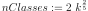.Under the normality hypothesis, we compute cumulative function of the
set (mean and standard
deviation of the underlying normal distribution derived from the dataset). The interval 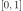 is then splitted
onto intervals.For the Chi-Square test, two major elements are to be considered:
- 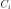 is the number of counted observations in the class

- 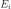 is the number of expected observations in the class
Using the cumulative information, we count number of elements in each class (). Also, under the null hypothesis, the different classes are equiprobable (
 .
.From the previous values per class, we compute the Pearson test statistic 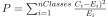.
Finally, the p-value is computed thanks to a chi-square distribution with 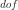 degrees of freedom, where is adjusted thanks to the boolean ResourceMap key (
LinearModelAnalysis-ChiSquareAdjust). If key is set to True, degree of freedom is 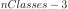. Otherwise it is 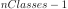 It is recommended to test with both True and False values.- testResult :
-
getNormalityTestResultKolmogorovSmirnov()¶ Performs Kolmogorov test to check Gaussian assumption of the model (null hypothesis). It is accepted when p-value is low.
Returns: - testResult :
TestResult Test result class.
Notes
We check that the residual is Gaussian thanks to
FittingTest::Kolmogorov.- testResult :
-
getRSquared()¶ Accessor to the R-squared test.
Returns: - rSquared :
NumericalScalar
- rSquared :
-
getResiduals()¶ Accessor to the residuals.
Returns: - sampleResiduals :
Sample
- sampleResiduals :
-
getShadowedId()¶ Accessor to the object’s shadowed id.
Returns: - id : int
Internal unique identifier.
-
getStandardizedResiduals()¶ Accessor to the standardized residuals.
Returns: - standardizedResiduals :
Sample
- standardizedResiduals :
-
getVisibility()¶ Accessor to the object’s visibility state.
Returns: - visible : bool
Visibility flag.
-
hasName()¶ Test if the object is named.
Returns: - hasName : bool
True if the name is not empty.
-
hasVisibleName()¶ Test if the object has a distinguishable name.
Returns: - hasVisibleName : bool
True if the name is not empty and not the default one.
-
setName(*args)¶ Accessor to the object’s name.
Parameters: - name : str
The name of the object.
-
setShadowedId(*args)¶ Accessor to the object’s shadowed id.
Parameters: - id : int
Internal unique identifier.
-
setVisibility(*args)¶ Accessor to the object’s visibility state.
Parameters: - visible : bool
Visibility flag.
-